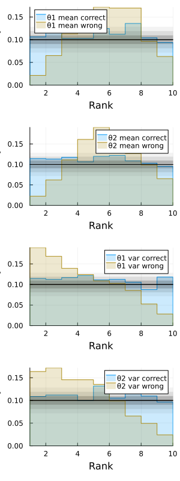

Tutorial
Problem Setup
Let's consider a simple Normal-Normal model:
\[\begin{aligned} \theta_1 &\sim \mathrm{normal}\left(0, \sigma^2\right) \\ \theta_2 &\sim \mathrm{normal}\left(0, \sigma^2\right) \\ y &\sim \mathrm{normal}\left(\theta_1 + \theta_2, \sigma_{\epsilon}^2\right). \end{aligned}\]
The joint log-likelihood can be implemented as follows:
using Random
using Distributions
struct Model
sigma ::Float64
sigma_eps::Float64
y ::Float64
end
nothingFor sampling from the posterior, a simple Gibbs sampling strategy is possible:
struct Gibbs end
function complete_conditional(θ::Real, σ²::Real, σ²_ϵ::Real, y::Real)
μ = σ²/(σ²_ϵ + σ²)*(y - θ)
σ = 1/sqrt(1/σ²_ϵ + 1/σ²)
Normal(μ, σ)
end
function step(rng::Random.AbstractRNG, model::Model, ::Gibbs, θ)
θ = copy(θ)
y = model.y
σ² = model.sigma^2
σ²_ϵ = model.sigma_eps^2
θ[1] = rand(rng, complete_conditional(θ[2], σ², σ²_ϵ, y))
θ[2] = rand(rng, complete_conditional(θ[1], σ², σ²_ϵ, y))
θ
end
nothingTesting the Gibbs Sampler
All of the functionalities of MCMCTesting assume that we can sample from the joint distribution $p(\theta, y)$. This is done by as follows:
using MCMCTesting
function MCMCTesting.sample_joint(rng::Random.AbstractRNG, model::Model)
θ₁ = rand(rng, Normal(0, model.sigma))
θ₂ = rand(rng, Normal(0, model.sigma))
θ = [θ₁, θ₂]
y = rand(rng, Normal(θ[1] + θ[2], model.sigma_eps))
θ, y
end
nothingThe Gibbs samplers can be connected to MCMCTesting by implementing the following:
using Accessors
function MCMCTesting.markovchain_transition(
rng::Random.AbstractRNG, model::Model, kernel, θ, y
)
model′ = @set model.y = only(y)
step(rng, model′, kernel, θ)
end
nothingLet's check that the implementation is correct by
model = Model(1., .5, randn())
kernel = Gibbs()
test = TwoSampleTest(100, 100)
subject = TestSubject(model, kernel)
seqmcmctest(test, subject, 0.0001, 100; show_progress=false)truetrue means that the tests have passed.
Now, let's consider two erroneous implementations:
struct GibbsWrongMean end
function complete_conditional_wrongmean(θ::Real, σ²::Real, σ²_ϵ::Real, y::Real)
μ = σ²/(σ²_ϵ + σ²)*(y + θ)
σ = 1/sqrt(1/σ²_ϵ + 1/σ²)
Normal(μ, σ)
end
function step(rng::Random.AbstractRNG, model::Model, ::GibbsWrongMean, θ)
θ = copy(θ)
y = model.y
σ² = model.sigma^2
σ²_ϵ = model.sigma_eps^2
θ[1] = rand(rng, complete_conditional_wrongmean(θ[2], σ², σ²_ϵ, y))
θ[2] = rand(rng, complete_conditional_wrongmean(θ[1], σ², σ²_ϵ, y))
θ
end
struct GibbsWrongVar end
function complete_conditional_wrongvar(θ::Real, σ²::Real, σ²_ϵ::Real, y::Real)
μ = σ²/(σ²_ϵ + σ²)*(y - θ)
Normal(μ, sqrt(σ²))
end
function step(rng::Random.AbstractRNG, model::Model, ::GibbsWrongVar, θ)
θ = copy(θ)
y = model.y
σ² = model.sigma^2
σ²_ϵ = model.sigma_eps^2
if rand(Bernoulli(0.5))
θ[1] = rand(rng, complete_conditional_wrongvar(θ[2], σ², σ²_ϵ, y))
θ[2] = rand(rng, complete_conditional_wrongvar(θ[1], σ², σ²_ϵ, y))
else
θ[2] = rand(rng, complete_conditional_wrongvar(θ[1], σ², σ²_ϵ, y))
θ[1] = rand(rng, complete_conditional_wrongvar(θ[2], σ², σ²_ϵ, y))
end
θ
end
nothingThe kernel with a wrong mean fails:
kernel = GibbsWrongMean()
subject = TestSubject(model, kernel)
seqmcmctest(test, subject, 0.0001, 100; show_progress=false)falseand so does the one with the wrong variance:
kernel = GibbsWrongVar()
subject = TestSubject(model, kernel)
seqmcmctest(test, subject, 0.0001, 100; show_progress=false)falseVisualizing Simulated Ranks
MCMCTesting also provides some basic plot recipes for visualizing the simulated rank for the exact rank test. For this, Plots must be imported before MCMCTesting.
using Plots
gr()
using MCMCTesting
nothingAlso, since the exact rank test explicitly requires the MCMC kernel to be reversible, we modify the previous Gibbs sampler to use a random scan order.
function step(rng::Random.AbstractRNG, model::Model, ::Gibbs, θ)
θ = copy(θ)
y = model.y
σ² = model.sigma^2
σ²_ϵ = model.sigma_eps^2
if rand(Bernoulli(0.5))
θ[1] = rand(rng, complete_conditional(θ[2], σ², σ²_ϵ, y))
θ[2] = rand(rng, complete_conditional(θ[1], σ², σ²_ϵ, y))
else
θ[2] = rand(rng, complete_conditional(θ[1], σ², σ²_ϵ, y))
θ[1] = rand(rng, complete_conditional(θ[2], σ², σ²_ϵ, y))
end
θ
end
function step(rng::Random.AbstractRNG, model::Model, ::GibbsWrongVar, θ)
θ = copy(θ)
y = model.y
σ² = model.sigma^2
σ²_ϵ = model.sigma_eps^2
if rand(Bernoulli(0.5))
θ[1] = rand(rng, complete_conditional_wrongvar(θ[2], σ², σ²_ϵ, y))
θ[2] = rand(rng, complete_conditional_wrongvar(θ[1], σ², σ²_ϵ, y))
else
θ[2] = rand(rng, complete_conditional_wrongvar(θ[1], σ², σ²_ϵ, y))
θ[1] = rand(rng, complete_conditional_wrongvar(θ[2], σ², σ²_ϵ, y))
end
θ
end
nothingThen, we can simulate the ranks and then plot them using Plots.
test = ExactRankTest(10000, 30, 10)
rank_correct = simulate_ranks(test, TestSubject(model, Gibbs()); show_progress=false)
rank_wrong = simulate_ranks(test, TestSubject(model, GibbsWrongVar()); show_progress=false)
stat_names = ["θ1 mean correct", "θ2 mean correct", "θ1 var correct", "θ2 var correct"]
rankplot(test, rank_correct; stat_names)
stat_names = ["θ1 mean wrong", "θ2 mean wrong", "θ1 var wrong", "θ2 var wrong"]
rankplot!(test, rank_wrong; stat_names)
savefig("rankplot.svg")
nothingqt.qpa.xcb: could not connect to display
qt.qpa.plugin: From 6.5.0, xcb-cursor0 or libxcb-cursor0 is needed to load the Qt xcb platform plugin.
qt.qpa.plugin: Could not load the Qt platform plugin "xcb" in "" even though it was found.
This application failed to start because no Qt platform plugin could be initialized. Reinstalling the application may fix this problem.
Available platform plugins are: xcb, eglfs, minimal, vkkhrdisplay, offscreen, minimalegl, linuxfb, vnc.
Aborted (core dumped)
connect: Connection refused
GKS: can't connect to GKS socket application
GKS: Open failed in routine OPEN_WS
GKS: GKS not in proper state. GKS must be either in the state WSOP or WSAC in routine ACTIVATE_WS
If the MCMC kernel under test is reversible and correct, the ranks must resemble samples from a uniform distribution. The colored bands around black line show the 1σ, 2σ, and 3σ deviations from the null hypothesis. Here, we can see that the ranks of the erroneous kernel are not uniform.